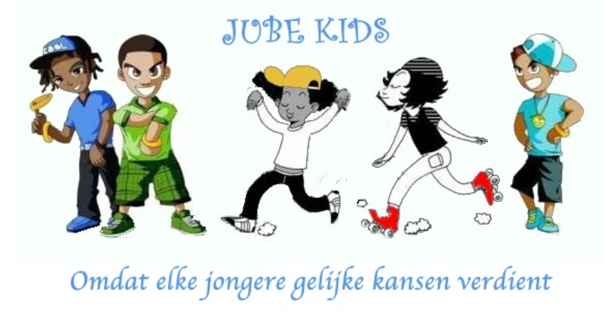
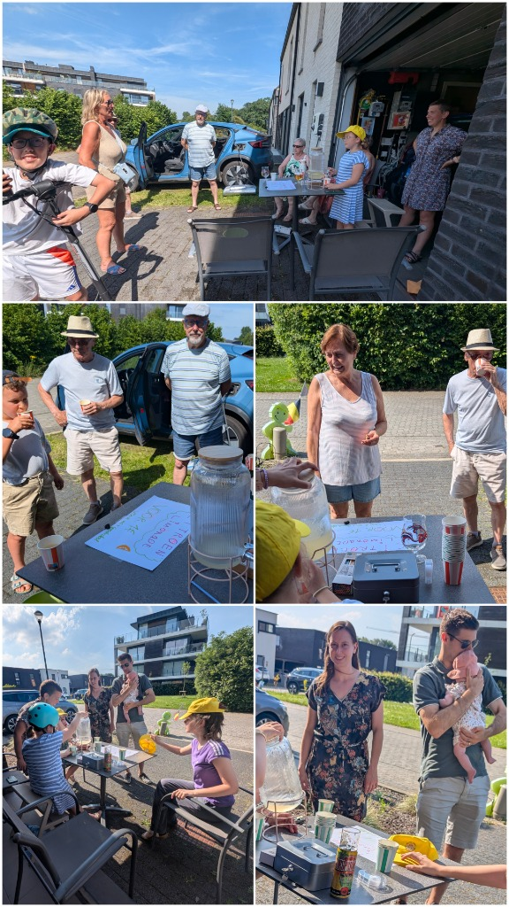

Frisse limonade met een warm hart
Op zonnige zomerdagen bouwt Nelle een gezellig kraampje voor de deur. Met versgeperste citroenen, een glimlach en een zelfgemaakt bordje verwelkomt ze iedereen voor een verfrissend bekertje citroenlimonade.
Het zorgt niet alleen voor verkoeling in de straat, maar brengt ook de buurt samen voor een gezellige babbel op een zomerse dag.

Steun voor Jube Kids
Met haar limonadekraampje wil Nelle haar steentje bijdragen aan andere kinderen in Aalst. De volledige opbrengst gaat naar Jube Kids (een project van Armoede Bestrijden in Aalst).
Jube Kids zet zich met hart en ziel in om kansarme kinderen in Aalst te ondersteunen, onder andere met schoolmateriaal, kledij, verjaardagsboxen en leuke activiteiten.
Sfeerbeelden van het limonadekraampje
Een blik op een geslaagde en zonnige verkoopdag aan huis, met heel wat dorstige en vrijgevige bezoekers!
